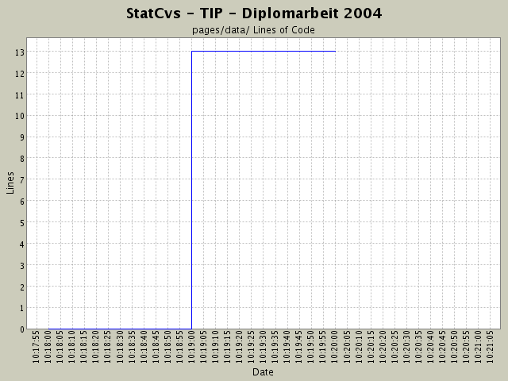

Summary Period: 2004-02-25 to 2004-04-28
[root]/pages/data
 admin
(2 files, 0 lines)
admin
(2 files, 0 lines)
 anzeige
(0 files, 0 lines)
anzeige
(0 files, 0 lines)
 event
(2 files, 0 lines)
event
(2 files, 0 lines)
 sight
(5 files, 0 lines)
sight
(5 files, 0 lines)
 topic
(2 files, 0 lines)
topic
(2 files, 0 lines)
 debug
(1 files, 0 lines)
debug
(1 files, 0 lines)
 error
(2 files, 0 lines)
error
(2 files, 0 lines)

Total Lines Of Code:
13 (2004-06-13 13:05)
| Author | Changes | Lines of Code | Lines per Change |
|---|---|---|---|
| hirsch | 19 (100.0%) | 13 (100.0%) | 0.6 |
statt jsp:include nun überall <@ include ....
0 lines of code changed in:
Umstrukturierung der JSP-Seiten,
Anpassung der Links in Struts-config.xml -
innerhalb der Aktionen darf kein Strzts-Forward benutzt werden.
Hier muss der absolute Dateipfad hin!
Profiländerungsseite hat jetzt ein Zwischenmenü
zur Auswahl des Profillteils, den man ändern möchte.
0 lines of code changed in:
SQL-Statements zur SightGruppenAnzeige eingefügt,
Menü angepasst (menue.jsp)
0 lines of code changed in:
Anzeige der Sehenswürdigkeitsgruppen angefangen,
JSP-Rümpfe und Action-Ablauf ...
0 lines of code changed in:
Umstrukturierung,
BenutzerBearbeiter fügt jetzt neue Benutzer hinzu und
meckert, wenn man ein bestehendes Login nochmals
angeben will.
0 lines of code changed in:
NAVBACK überall eingebaut.
Logout-Nachricht wird jetzt in Action erzeugt und
in JSP angezeigt.
0 lines of code changed in:
inspectvariables zur VariablenAnzeige im Debuggingmodus
jsp:include scheint immer Anwendungsrelativ Pfade
lesen zu können - vll. braucht man dann keine Anpassung
wie beim normalen HTMl.
0 lines of code changed in:
Einbauen der DispatchAction
in admin-Menü und Struts-config.xml
0 lines of code changed in:
Einbau eines ADMIN-Untermenüs mit entsprechenden Menüpunkten,
Konfiguration in struts-config.xml angepasst
0 lines of code changed in:
Anpassen der HTML-Seiten - alles (auch Fehlerseiten) sind jetzt
sauber auf ResourceBundle umgestellt!
Action in Struts-config angepasst -
im Hauptmenü wird jetzt auf debugging-Untermenü verwiesen
0 lines of code changed in:
anpassen der ResourceBundles, so dass im Quellcode der HTML-Seiten
nix mehr auftaucht, was nativ ist.
0 lines of code changed in:
alle HTML-Seiten haben jetzt einen eindeutigen internationalisierten
Titel ... somit sollte das Blättern im Verlaufsspeicher des Browsers bei der Ansicht
verbessert sein. (Gespräch mit JS, 2004-04-24)
0 lines of code changed in:
FAVICON in StrutsConfig und JSP-Seiten eingebunden
0 lines of code changed in:
EL eingeschaltet auf allen Seiten
0 lines of code changed in:
erstes lokales COMMIT! Hoffentlich gibt es weniger Probleme als an der INF!
13 lines of code changed in:
Generated by StatCvs v0.2-dev